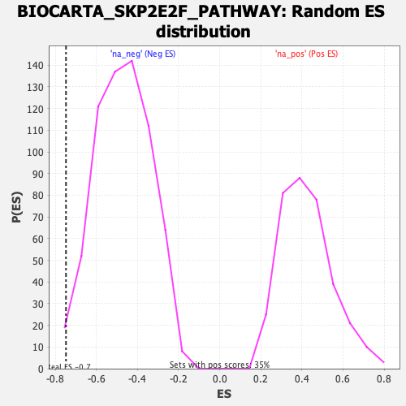

| | | Dataset | DE_genes2 |
| Phenotype | NoPhenotypeAvailable |
| Upregulated in class | na_neg |
| GeneSet | BIOCARTA_SKP2E2F_PATHWAY |
| Enrichment Score (ES) | -0.74762774 |
| Normalized Enrichment Score (NES) | -1.5889629 |
| Nominal p-value | 0.0106870225 |
| FDR q-value | 0.14626038 |
| FWER p-Value | 0.883 |
Table: GSEA Results Summary
 Fig 1: Enrichment plot: BIOCARTA_SKP2E2F_PATHWAY
Fig 1: Enrichment plot: BIOCARTA_SKP2E2F_PATHWAY
Profile of the Running ES Score & Positions of GeneSet Members on the Rank Ordered List
| PROBE | GENE SYMBOL | GENE_TITLE | RANK IN GENE LIST | RANK METRIC SCORE | RUNNING ES | CORE ENRICHMENT | | 1 | CDC34 | | | 3263 | 1.088 | -0.1621 | No |
| 2 | CCNA1 | | | 5896 | 0.366 | -0.3095 | No |
| 3 | SKP1 | | | 9904 | -0.430 | -0.5380 | No |
| 4 | CDK2 | | | 10886 | -0.760 | -0.5726 | No |
| 5 | CCNE1 | | | 12690 | -1.585 | -0.6301 | No |
| 6 | CUL1 | | | 14633 | -3.166 | -0.6445 | Yes |
| 7 | E2F1 | | | 15036 | -3.695 | -0.5484 | Yes |
| 8 | TFDP1 | | | 15156 | -3.856 | -0.4300 | Yes |
| 9 | RB1 | | | 15805 | -5.145 | -0.3017 | Yes |
| 10 | SKP2 | | | 16506 | -10.608 | 0.0015 | Yes |
Table: GSEA details [plain text format]

Fig 2: BIOCARTA_SKP2E2F_PATHWAY: Random ES distribution
Gene set null distribution of ES for BIOCARTA_SKP2E2F_PATHWAY